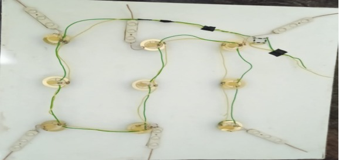
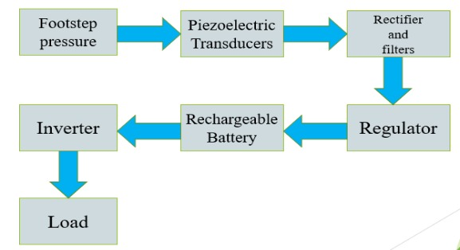
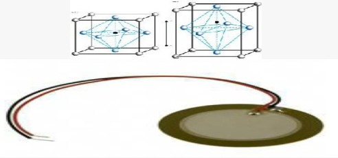
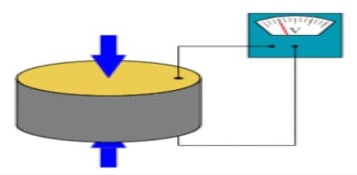
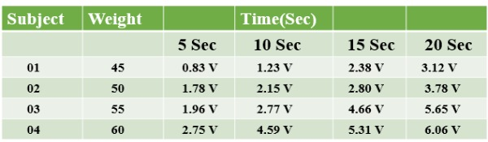

Foot Step Power Generation Using Piezoelectric Sensor
INTRODUCTION
For an alternate method to generate electricity there are number of methods by which electricity can be produced, out if such methods footstep energy generation can be an effective method to generate electricity. Walking is the most common activity in human life. When a person walks, he loses energy to the road surface in the form of impact, vibration, sound etc, due to the transfer of his weight on to the road surface, through foot falls on the ground during every step. This energy can be tapped and converted in the usable form such as in electrical form.
This device, if embedded in the footpath, can convert foot impact energy into electrical form. Human-powered transport has been in existence since time immemorial in the form of walking, running and swimming. However modern technology has led to machines to enhance the use of human-power in more efficient manner. In this context, pedal power is an excellent source of energy and has been in use since the nineteenth century making use of them most powerful muscles in the body. Ninety five percent of the exertion put into pedal power is converted into energy. Pedal power can be applied to a wide range of jobs and is a simple, cheap, and convenient source of energy.
However, human kinetic energy can be useful in a number of ways but it can also be used to generate electricity based on different approaches and many organizations are already implementing human powered technologies to generate electricity to power small electronic appliances. Energy is the ability to do work. While energy surrounds us in all aspects of life, the ability to harness it and use it for constructive ends as economically as possible is the challenge before mankind. Alternative energy refers to energy sources, which are not based on the burning of fossil fuels or the splitting of atoms. The renewed interested in this field of study comes from the undesirable effect of pollution (as witnessed today) both from burning fossil fuel and from nuclear waste by products. Fortunately, there are many means of harnessing energy, which less damaging impact on our environment in India. The alternatives are solar, wind power generation, geothermal tides, hydroelectric. In addition to these we have developed a new methodology of generation power using human energy and the name of this alternative is foot step power generation.
MODEL OF FOOTSTEP ENERGY GENERATION

Figure 1.1: Storing Device for Foot Step Electric Energy
The working of the Foot Stop Electric Converter (FSEC) is demonstrated in photographs in the right side photograph shows the foot touching the top plate without applying weight. The left side Photograph shows the foot when full weight of the body is transferred to the top plate. A 6W, 12V bulb connected to the output of the alternator glows, to indicate the electric output when foot load is applied. The unit is designed to generate full power pulse when actuated by a person weighing nearly 60 kg. An experimental plot of voltage vs. time was generated, by using an oscilloscope. Using voltage data and the load (a resistor), a typical plot of power vs. time was generated. The power generated by the foot step generator can be stored in an energy storing device. The output of the generator was fed to a 12leadacidbattery, through an ac-dc converter bridge. Initially, the battery was completely discharged. Then, the FSEC was operated by applying foot load and energy was stored in the battery. A100 W, 230V bulb was connected to the battery through an inverter. The arrangement is shown in Fig.4. The duration of lighting, the bulb for number of footsteps and corresponding energy stored.
BLOCK DIAGRAM

The basic working principle of our project is based on the piezoelectric sensor. To implement this we adjust the wooden plates above and below the sensors and moveable springs. Non-conventional energy using foot step is converting mechanical energy into the electrical energy. Foot step board it consist of a 16 piezo electric sensors which are connected in parallel. When the pressure is applied on the sensors, the sensors will convert mechanical energy into electrical energy. This electrical energy will be storing in the 12v rechargeable battery connected to inverter. We are using conventional battery charging unit also for giving supply to the circuitry. This inverter is used to convert the 12 Volt D.C to the 230 Volt A.C. This 230 Volt A.C voltage is used to activate the loads. By using this AC voltage we can operate AC loads.
PIEZOELECTRIC SENSOR


The rise of piezoelectric technology is directly related to a set of inherent advantages. The high modulus of elasticity of many piezoelectric materials is comparable to that of many metals and goes up to 10e6 N/m² [Even though piezoelectric sensors are electro mechanical systems that react to compression, the sensing elements show almost zero deflection. This is the reason why piezoelectric sensors are so rugged, have an extremely high natural frequency and an excellent linearity over a wide amplitude range. Additionally, piezoelectric technology is insensitive to electromagnetic fields and radiation, enabling measurements under harsh conditions. Some materials used (especially gallium phosphate or tourmaline) have an extreme stability even at high temperature, enabling sensors to have a working range of up to 1000°C. Tourmaline shows piezoelectricity in addition to the piezoelectric effect; this is the ability to generate an electrical signal.
When the temperature of the crystal changes. This effect is also common to piezo ceramic materials. One disadvantage of piezoelectric sensors is that they cannot be used for truly static measurements. A static force will result in a fixed amount of charges on the piezoelectric material. While working with conventional readout electronics, imperfect insulating materials, and reduction in internal sensor resistance will result in a constant loss of electrons, and yield a decreasing signal.
Elevated temperatures cause an additional drop in internal resistance and sensitivity. The main effect on the piezoelectric effect is that with increasing pressure loads and temperature, the sensitivity is reduced due to twin formation.While quartz sensors need to be cooled during measurements at temperatures above 300°C, special types of crystals like GaPO4 gallium phosphate do not show any twin formation upto the melting point of the material. Whenever force is applied on a piezo electric catalyst that force is converted into electrical energy. It can be used to drive DC loads. And that minute voltage which is stored in the lead acid battery. The battery is connected to the inverter. This inverter is used to convert 12V dc to 230V ac. This 230V ac voltage is used to activate the loads. We are using conventional battery charging unit also for giving supply to the circuitry.
ADVANTAGE
1.Power generation is simply walking on step.
2.No need fuel input.
3.This is a Non-conventional system. No moving parts-long service life.
4.Self-generating-no external power required. Compact yet highly sensitive
5.Reliable, Economical, Eco-Friendly.
6.Less consumption of Non- renewable energies.
7.Power also generated by running or exercising on the step. Battery is used to store the generated power
8.Extremely wide dynamic range, almost free of noise
RESULT

Study using foot press or pumping is conducted to determine the voltage output of a 9 cell of the piezoelectric transducer that connected in series-parallel connection. Table 5 shows subject with 45 kg, 50 kg, 55 kg and 60 kg body weight are used to test the piezoelectric tile. They are asked to step on the tiles to do the foot press or pumping activities to test the voltage generating capacity of the piezoelectric tile. The voltage generated is based on the time recorded which are 5 sec, 10 sec, 15 sec, and 20 sec. The relation between the time taken and the voltage being generated is plotted in the graph for each weight. From Figure 6, it can be seen that maximum voltage is generated when the person pumps about 20 seconds on the piezoelectric tile. It also can be concluded that the force that is applied by every subject are variant. The voltage generated depends on the force that being applied to the piezoelectric tile. In theory when a bigger person pump on this piezoelectric tile, the voltage that is generated is higher compared to the smaller person. There are a linear relation between the force and the voltage generated. Figure 6 shows that the theory is proved. The weight of subject 4 is bigger than other subjects so it the voltage that generates by this subject is the highest when the subject pump on the tile.
CONCLUSION
1. The project “POWER GENERATION USING FOOT STEP” is successfully tested and implemented which is the best economical, affordable energy solution to common people.
2. This can be used for many applications in rural areas where power availability is less or totally absence. India is a developing country where energy management is a big challenge for huge population. Comparison between various piezo electric material shows that PZT is superior in characteristics. Also, by comparison it was found that series-parallel combination connection is more suitable. The weight applied on the tile and corresponding voltage generated is studied and they are found to have linear relation. It is especially suited for implementation in crowded areas. This can be used in street lighting without use of long power lines. It can also be used as charging ports, lighting of pavement side buildings. As a fact only 11% of renewable energy contributes to our primary energy. If this project is deployed then not only we can overcome the energy crises problem but this also contributes to create a healthy global environmental change. Smart system produces 2000 watts of electricity. Have a life of approximately 5 years.